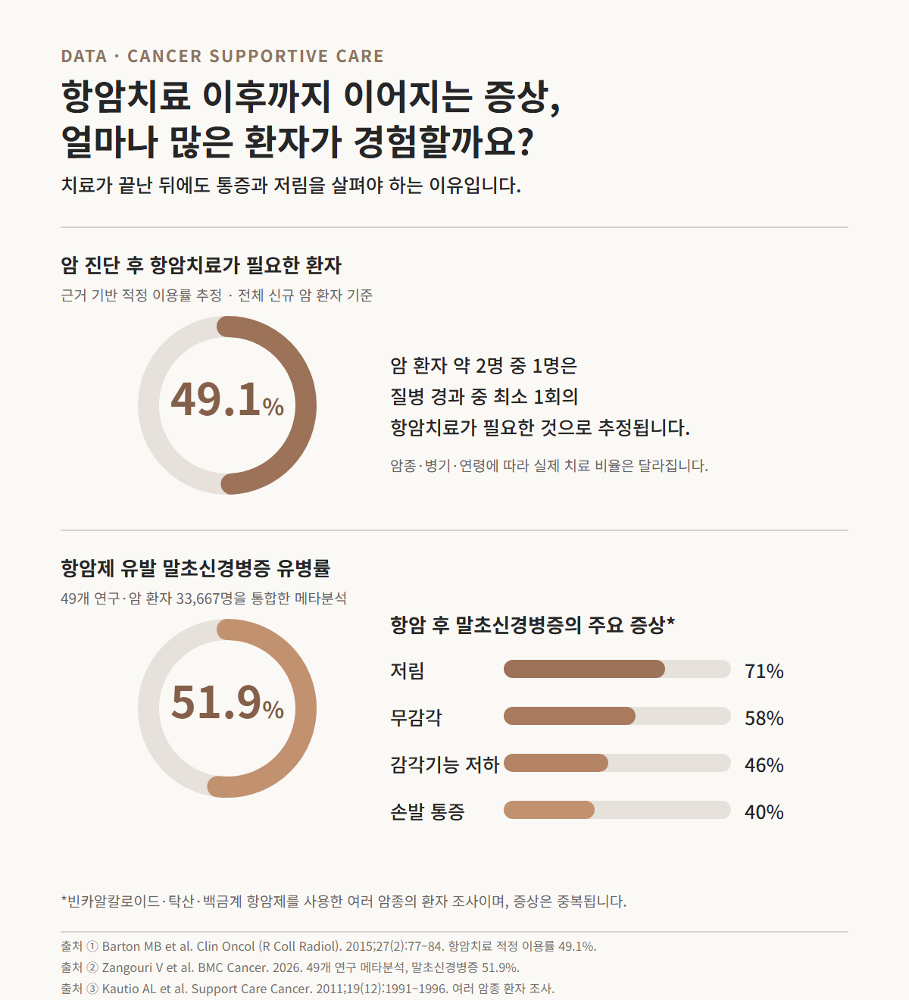

진료실에서 만나는 항암 환자들은 “치료는 끝났는데 왜 계속 아픈가요?”라고 자주 묻습니다.
암 치료가 끝났다는 날짜와 신경·근육·관절의 상태가 나아지는 시점은 일치하지 않습니다. 손발이 찌릿하거나 화끈거리고, 어깨가 굳어 팔을 들기 어렵고, 이전에는 없던 관절통이 이어지는 이유도 여기에 있습니다.

WHY IT HURTS
항암치료 후 통증이 지속되는 이유
항암치료 후 통증은 한 가지 원인으로 설명되지 않습니다. 같은 항암제를 사용해도 누적 용량과 치료 기간, 수술 부위, 방사선치료 여부, 당뇨나 기존 관절질환에 따라 증상이 달라집니다.
항암제 유발 말초신경병증
탁산계·백금계·빈카알칼로이드계 항암제는 말초신경에 영향을 줍니다. 손발 저림, 무감각, 화끈거림, 전기가 흐르는 듯한 통증이 나타납니다.
수술 후 통증과 유착
절개 부위와 주변 조직의 긴장, 흉터와 유착, 신경 자극이 통증을 만듭니다. 수술 부위를 보호하는 자세가 오래 이어지면 다른 관절까지 부담을 받습니다.
근육·관절 통증
활동량 감소와 근력 저하, 호르몬치료의 영향이 목·어깨·허리와 여러 관절의 뻣뻣함으로 나타납니다.
방사선치료 후 조직 변화
치료 부위의 피부와 연부조직이 뻣뻣해지고 움직임이 줄면서 당김과 관절 운동 제한이 이어집니다.
PAIN PATTERN
저림·무감각·통증은 서로 다르게 살펴야 합니다
항암제 유발 말초신경병증 연구에서는 저림 71%, 무감각 58%, 감각기능 저하 46%, 손발 통증 40%가 보고됐습니다. 한 환자에게 여러 증상이 함께 나타나는 경우가 많습니다.
따끔거리는 저림과 타는 듯한 통증은 신경 자극의 특징을 보입니다. 반면 어깨를 움직일 때 특정 각도에서 아프거나 목과 날개뼈 주변이 묵직한 통증은 관절 운동 제한과 근육 긴장을 함께 확인합니다. 진료에서는 ‘어디가 아픈가’와 함께 ‘어떻게 아픈가’를 묻습니다.
CLINICAL VIEW
항암 후유증 한의원 진료에서 확인하는 항목
디어한의원에서는 아픈 부위만 확인하지 않습니다. 암 진단 시점부터 수술, 항암제와 호르몬제, 방사선치료의 순서를 먼저 정리합니다. 이어 증상이 시작된 시점과 좌우 차이, 감각과 근력, 관절 운동 범위, 수면과 일상 활동의 불편을 확인합니다.
- 암의 종류와 치료 단계
- 사용한 항암제와 누적 치료 횟수
- 수술·림프절 절제·방사선치료 범위
- 손발 감각과 근력의 변화
- 어깨와 팔의 운동 범위
- 최근 혈액검사와 복용 약
같은 ‘어깨 통증’이라도 치료 부위는 달라집니다.
수술한 쪽 가슴과 겨드랑이 조직의 당김이 중심인지, 어깨 관절 자체가 굳었는지, 목과 날개뼈 주변 근육이 대신 움직이며 과부하를 받는지 구분합니다. 손발 통증도 감각 저하가 중심인지, 근력과 보행까지 영향을 받는지에 따라 진료의 우선순위가 달라집니다.
IN OUR CLINIC
50대 유방암 환자의 수술 후 어깨 통증 사례
림프부종이 걱정돼 팔을 아끼다
반대쪽 어깨까지 아파졌습니다.
50대 여성 · 유방암 수술 후 양쪽 어깨 통증
림프절 전이를 동반한 유방암 진단과 수술 이후 내원했습니다. 림프부종에 대한 걱정으로 팔을 적극적으로 움직이지 못했고 수술한 쪽 어깨 통증이 심했습니다.
수술과 항암치료 경과를 확인하고 양쪽 어깨의 운동 범위, 가슴과 겨드랑이의 당김, 목과 날개뼈 주변 근육의 긴장을 살폈습니다.
침 치료와 함께 현재 가능한 팔 움직임을 단계적으로 안내했습니다. 반대쪽 어깨에 집중된 부담도 함께 다루며 일상에서 팔을 사용하는 방법을 설명했습니다.
※ 개인을 식별할 수 있는 정보는 제외했습니다. 한 환자의 진료 과정이며 증상과 치료 계획은 개인마다 다릅니다.
이 환자분은 통증 치료만큼 항암치료 이후 몸에서 나타나는 변화를 이해하는 과정이 좋았다고 전했습니다. 어떤 움직임을 피해야 하는지보다 어떤 범위에서 움직여도 되는지 알게 되면서 팔과 어깨를 대하는 태도도 달라졌습니다.
ACUPUNCTURE & REHABILITATION
항암치료 후 침 치료와 재활 관리
침 치료는 암 치료 이후 남은 근골격계 통증, 호르몬치료 관련 관절통, 항암제 유발 말초신경병증을 대상으로 연구되고 있습니다. 진료에서는 통증 부위의 근육 긴장을 낮추고 관절 움직임을 편하게 하며, 손발 감각과 일상 동작의 변화를 관찰하는 데 초점을 둡니다.
침 치료
목·어깨·허리와 팔다리의 긴장, 관절 움직임, 저림과 통증 양상을 기준으로 치료 부위와 자극량을 정합니다.
관절운동 안내
현재 가능한 범위를 확인하고 짧고 가벼운 움직임부터 시작합니다. 통증과 부종의 변화를 보며 강도를 조정합니다.
치료 경과 확인
통증 점수만 보지 않고 옷 입기, 머리 빗기, 걷기, 수면처럼 실제 생활에서 달라진 동작을 확인합니다.
A KIND OF CARE
암 환자에게 필요한 배려는 무엇일까요?
암을 진단받은 사람에게 우리는 “걱정하지 마세요”, “힘내세요”라는 말을 건넵니다. 진심 어린 위로도 소중하지만, 때로는 암과 관련 없는 작은 선물과 평범한 대화가 더 큰 힘이 됩니다.
환자를 그저 기쁘게 해주려는 사람, 예전처럼 함께 밥을 먹고 웃어주는 사람, 오늘도 내일도 재미있는 일이 남아 있다는 사실을 알려주는 사람. 환자를 오직 ‘암 환자’로만 대하지 않는 것이 진정한 배려일지 모릅니다.
항암 후유증 진료도 통증 수치에만 머물지 않습니다. 다시 편하게 옷을 입고, 산책하고, 가족과 식사하는 일상을 치료의 목표 안에 함께 둡니다.
CHECK FIRST
새로 생기거나 빠르게 심해지는 통증은 먼저 확인합니다
항암치료 이후의 통증이라고 모두 같은 원인으로 보지는 않습니다. 갑자기 시작된 심한 통증, 밤에 계속 악화되는 통증, 새로운 근력 저하와 보행 장애, 발열·부종·열감, 호흡곤란이 동반된 경우에는 암을 치료한 병원에서 먼저 원인을 확인합니다.
이러한 문제가 아니라면 항암치료 이력과 현재 기능을 정리한 뒤 통증의 원인을 나누고 치료 계획을 세웁니다. 진료 시 수술 기록, 사용한 항암제 이름, 최근 혈액검사 결과와 복용 약 목록을 가져오면 판단에 도움이 됩니다.
CONSULTATION
항암치료는 끝났지만
통증과 저림이 계속된다면
사용한 항암제와 수술 범위, 통증이 시작된 시점과 현재 움직임을 함께 살펴봅니다.
김민지 대표원장이 진료와 치료 계획을 직접 설명합니다.
FAQ
항암치료 후 통증에 관한 질문
항암치료가 끝난 뒤에도 손발 저림이 지속되나요?
탁산계·백금계·빈카알칼로이드계 등 일부 항암제는 말초신경에 영향을 줍니다. 저림과 감각 저하, 화끈거림은 치료 종료 후에도 이어지기도 합니다. 증상이 시작된 시점과 근력 변화를 담당 의료진에게 알리는 것이 좋습니다.
유방암 수술 후 어깨가 아프면 운동하지 말아야 하나요?
팔을 오래 사용하지 않으면 어깨 관절 운동 범위와 근력이 더 줄어듭니다. 수술 범위와 부종 여부를 확인한 뒤 허용된 범위에서 단계적으로 움직입니다.
항암치료 중 침 치료를 받을 때 무엇을 확인하나요?
항암 일정과 백혈구·호중구·혈소판 수치, 감염 및 출혈 위험, 항응고제를 포함한 복용 약을 확인한 뒤 치료 시점과 자극량을 정합니다.
항암 후 통증으로 한의원에 갈 때 무엇을 준비하나요?
암 진단명과 수술 기록, 사용한 항암제·호르몬제, 최근 혈액검사 결과와 복용 약 목록을 준비하면 더 구체적인 진료가 가능합니다.
참고한 의학 정보
- Burden of chemotherapy-induced neuropathy—A cross-sectional study (2011)
- Incidence, prevalence, and predictors of chemotherapy-induced peripheral neuropathy (2014)
- National Cancer Institute: Cancer Pain
- NCCIH: Psychological or Physical Approaches for Cancer Symptoms
- American Cancer Society: Exercises After Breast Cancer Surgery
이 글은 항암치료 이후 나타나는 통증을 이해하기 위한 건강정보입니다. 새로운 통증이나 빠르게 악화되는 증상은 담당 의료진의 평가가 우선입니다.
DEAR KOREAN MEDICINE CLINIC
디어한의원
서울 서초구 사임당로 143 3층 309호, 310호02-3486-1777